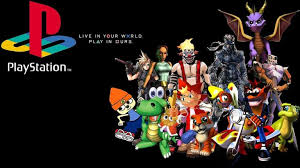
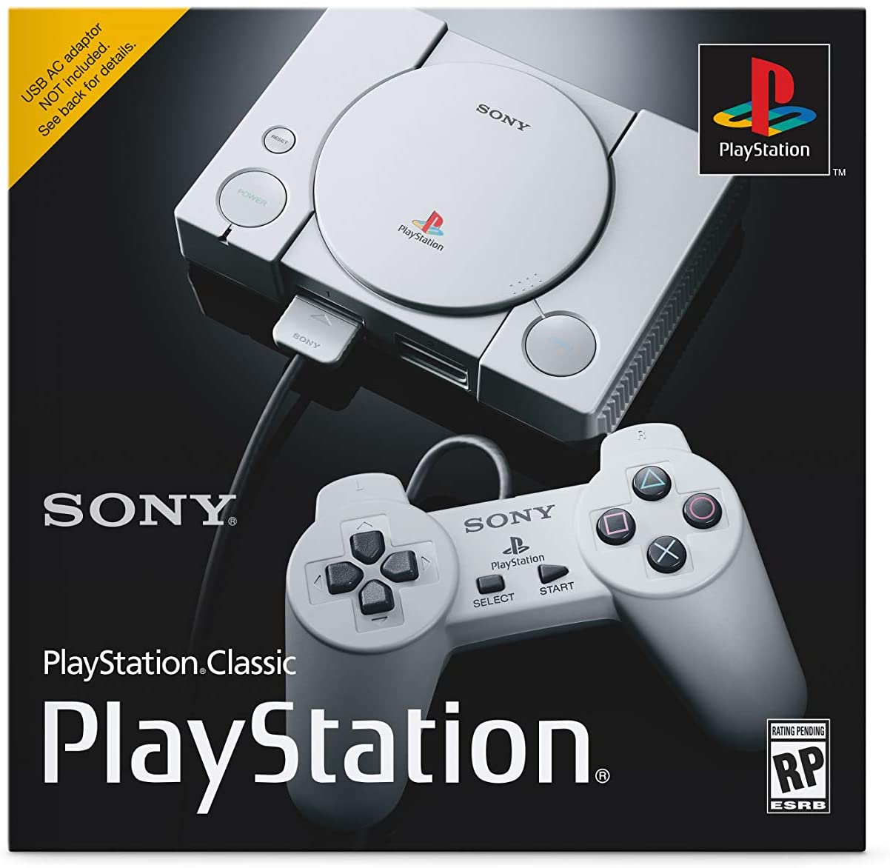
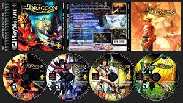

PS1: PlayStation 1 completa 27 anos desde seu lançamento oficial
O console que deu início a marca PlayStation da Sony está comemorando nesta sexta-feira (3) 27 anos desde seu lançamento no Japão. O videogame chegou ao mercado em 1994 e desde então tem revolucionado o segmento. No entanto, de acordo com o tabloide KotaKu, quase que o fenômeno da linhagem dos games – hoje uma das primeiras opções para quem deseja adquirir um videogame – não alavancou, já que originalmente a Sony uniu forças com a Nintendo para criar um console que, na verdade, não deu certo, não chegando a ser fabricado. A parceria foi um fracasso e, a partir disso, a empresa com sede em Tóquio avançou com os planos de fazer seu próprio console, hoje também conhecido pela a sigla PS.
O lançamento foi um sucesso, resultando em longas filas e agitação entre os jogadores japoneses. Com tecnologia de última geração – para a época – o PlayStation desbancou o antigo Nintendo, se tornando, inclusive, o lar de diversos jogos clássicos e ganhando boa distância contra a desenvolvedora (também japonesa), como Final Fantasy VII, Castlevania: Symphony Of The Night, Resident Evil 2, PaRappa The Rapper, Tomb Raider e Metal Gear Solid, entre vários outros.
Em 2005, quando a Sony vendeu mais de 100 milhões de PlayStations,
tornando-se o primeiro console a atingir tal marco, o nome deixou de ser
apenas um console para se tornar uma marca e, posteriormente, referência
quando o assunto são jogos eletrônicos e tecnologia.
Em 2000, chegou ao mercado o PlayStation 2, que depois acabou se tornando
o console mais vendido de todos os tempos. Em 2009 a Sony revolucionou
ainda mais com o PS3 e seu modelo Slim, seguido pelo PS4, de 2013, que além
de diversas atualizações e inovações – nos controles, por exemplo – trouxeram
a proposta de menos consumo de energia.Finalmente, em 2020, a aposta da Sony
para a nona geração de consoles foi o lançamento do PlayStation 5. Na época,
o Olhar Digital recebeu com exclusividade uma unidade antecipada do console
para testes. Clique aqui e confira o review sobre tudo o que achamos do
dispositivo.
Por Tamires Ferreira, editado por André Lucena 03/12/2021 14h49